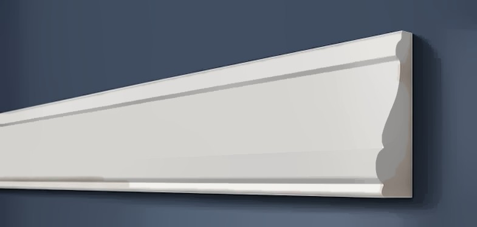

Молдинг для стен A152 под покраску, 85×25×2000 мм
85×25×2000 мм, дюрополимер, под покраску
3D не запускается в этом браузере — посмотрите фото.

Профиль (сечение)
Сечение в масштабе: ширина 85 мм, толщина 25 мм (стена снизу). Контур снят с каталога производителя.
Характеристики
| Артикул | A152 |
| Тип | Молдинг для стен |
| Ширина | 85 мм |
| Толщина | 25 мм |
| Длина | 2000 мм |
| В коробке | 21 шт |
| Материал | дюрополимер (полистирол высокой плотности) |
| Пожарная опасность | класс Г2 |
| Покрытие | белый грунт, под покраску |
| Производитель | ARTDEC (Казахстан) |
О товаре
A152 — настенный декоративный молдинг ARTDEC из дюрополимера под покраску, 85×25×2000 мм. Из него собирают рамки и панно на стенах, закрывают стык обоев и покраски, делят стену на зоны.
Молдинг поставляется белым и красится вместе со стеной или в контрастный цвет. Монтаж на клей (жидкие гвозди), углы запиливаются под 45°. Для рамки считайте периметр плюс запас на подрезку.
Ещё в разделе «Молдинги»

Молдинг для стен
A002
40×19×2000 мм, дюрополимер, под покраску
360 ₽за шт · 48 шт в коробкеПод заказ, 3–4 недели

Молдинг для стен
A002/2
40×19×2000 мм, дюрополимер, под покраску
410 ₽за шт · 48 шт в коробкеПод заказ, 3–4 недели

Молдинг для стен
A35
25×12×2000 мм, дюрополимер, под покраску
210 ₽за шт · 120 шт в коробкеПод заказ, 3–4 недели

Молдинг для стен
A35/2
25×12×2000 мм, дюрополимер, под покраску, сзади канал под кабель
290 ₽за шт · 120 шт в коробкеПод заказ, 3–4 недели

Молдинг для стен
A10
26×12×2000 мм, дюрополимер, под покраску
275 ₽за шт · 134 шт в коробкеПод заказ, 3–4 недели

Молдинг для стен
A23
38×15×2000 мм, дюрополимер, под покраску
490 ₽за шт · 60 шт в коробкеПод заказ, 3–4 недели
Заявка
Ответим с ценой, наличием и сроком в рабочее время. Удобнее всего — позвонить +7 999 204-10-47 или написать в Telegram @IuliiaUsenko.
Молдинг для стен A152Количество: 1 шт · цвет и количество подставятся в заявку